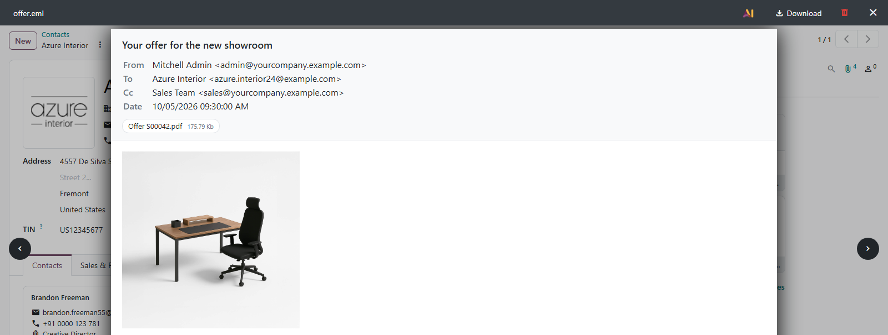
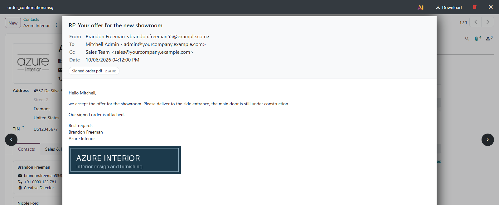
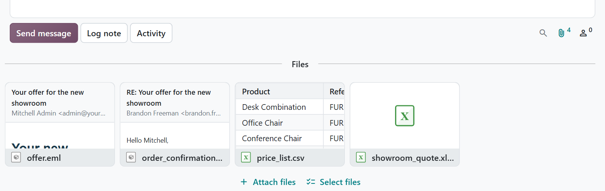
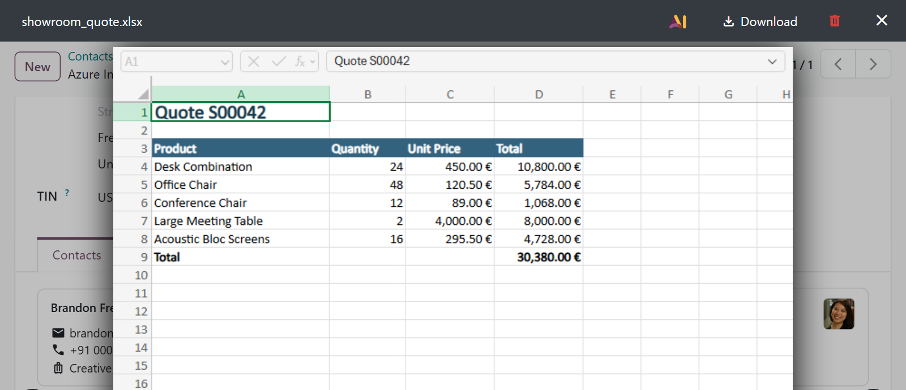

Email files, Outlook messages and CSV exports open in the Odoo file viewer and show a preview on their chatter card. Remote images stay blocked until you ask for them, and Word, Excel and PowerPoint can open in the Office Online viewer.
A saved email or Outlook message reads like it did in the inbox: sender, recipients, date, body and attachments.
Previews run sandboxed, without scripts. Tracking pixels and other remote images load only after one click.
Outlook files are read in plain Python. No converter, no extra library, no outside service for the previews.

Wherever Odoo shows an attachment — the chatter, a message, a document — these files now open in the viewer like a PDF or an image does.
An .eml file shows its header, its body with embedded pictures, and the files that came with it.
A .msg file dragged out of Outlook opens the same way, formatting and inline pictures included.
An export becomes a table with a fixed header row, whichever delimiter and encoding it was written in.
The chatter card shows the subject and sender of a mail, or the first rows of a table, before you open it.
A bar above the mail says what was blocked, and one click loads it for that message only.
Word, Excel and PowerPoint files open in the Microsoft viewer once the setting is switched on.
Outlook stores a saved message in its own binary format, and usually keeps the formatted body only inside a compressed rich-text copy. The module reads both and shows the message as it was written — in any language and character set, with its pictures and its list of attachments, including messages forwarded as attachments.


A record with ten attachments named offer.eml and export.csv is a guessing game. The cards show the subject and sender of every mail and the first rows of every table, so the right one is a glance away.
Switch on the Office preview in the general settings, and Office files open in the Microsoft Office Online viewer inside the Odoo file viewer. Odoo hands Microsoft a signed link to that one file, which stops working after five minutes.
The viewer downloads the file from your Odoo, so it works on a database the internet can reach and is off by default. Emails, Outlook messages and tables never leave the server.

What you get for free, and what has to be paid work.
Issues and merge requests are welcome on the public repository. They are read — but no response time is promised.
A preview for your own file format, or a fix on a deadline, is paid work — quoted up front. Write to sale@mukit.at.
LGPL-3. Use it, change it, ship it inside your own work — no licence key, no database count.
Modules written for your process, on your Odoo version.
Odoo joined up with the systems you already run.
Hosting, deployment and upgrades you do not have to watch.
Your team taught the parts of Odoo they actually use.
An agreement, so an answer does not depend on who is free.
Odoo.sh or on-premise. The Office preview needs a database the internet can reach.
None for emails and tables. Settings › General Settings › MS Office Preview for Office files.
Depends on mail, nothing external.
Click an attachment. Show remote images loads the pictures of one mail.
No data of its own; the Office setting is kept.
MuK IT GmbH, Vienna. Author and maintainer.
Send us an example and the Odoo version, and we will tell you what a preview for it takes. MuK IT — Austrian Odoo partner, Vienna.